Dr. Anran Qi

I am a postdoctoral researcher at Inria Sophia-Antipolis in the GraphDeco research group, working with Dr. Adrien Bousseau.
My research explores garment design and the interpretation of human sketches, blending the fields of Computer Graphics, Machine Learning, and Human-Computer Interaction.
Publication
| 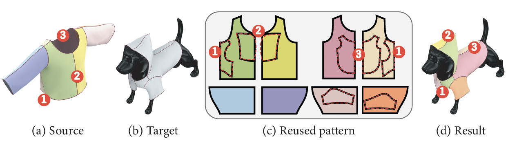 |
Anran Qi, Nico Pietroni, Maria Korosteleva, Olga Sorkine-Hornung, Adrien Bousseau Siggraph 2025 (Conference track) [PDF] [Project Page] [Supplementary] |
| 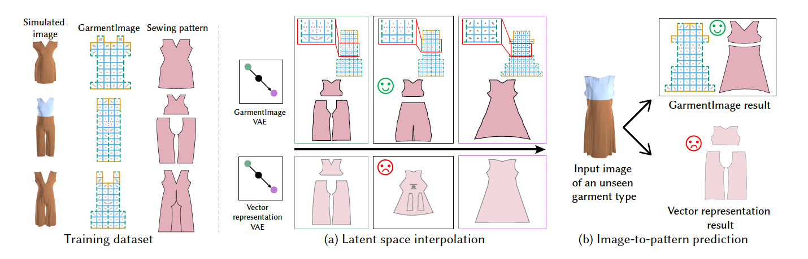 |
Yuki Tatsukawa, Anran Qi, I-Chao Shen, Takeo Igarashi Siggraph 2025 (Conference track) [PDF] [Project Page] |
| 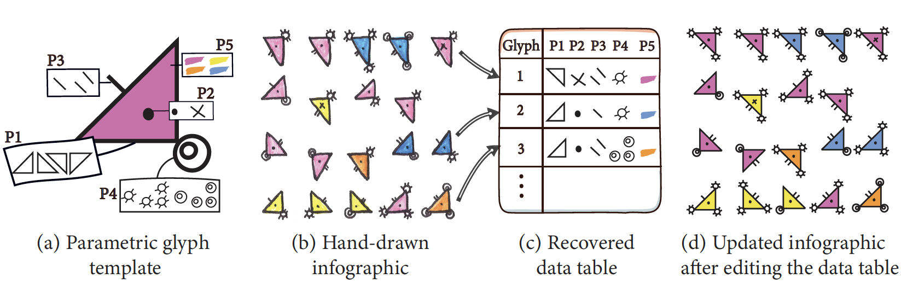 |
Anran Qi, Theophanis Tsandilas, Ariel Shamir, Adrien Bousseau Computer & Graphics (Presented at Expressive 2025) [PDF] [Project Page] [Supplementary] |
| 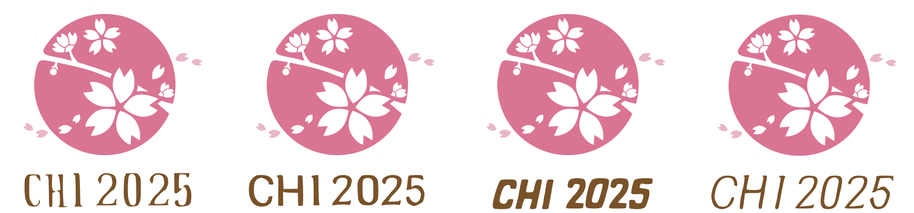 |
Yuki Tatsukawa, I-Chao Shen, Mustafa Doga Dogan, Anran Qi, Yuki Koyama, Ariel Shamir, Takeo Igarashi CHI 2025 [PDF] [Project Page] |
| 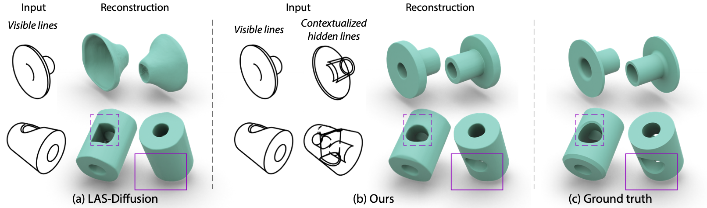 |
Yuta Fukushima, Anran Qi, I-Chao Shen, Yulia Gryaditskaya, Takeo Igarashi Eurographics 2024 Short Paper [PDF] [Video] |
| 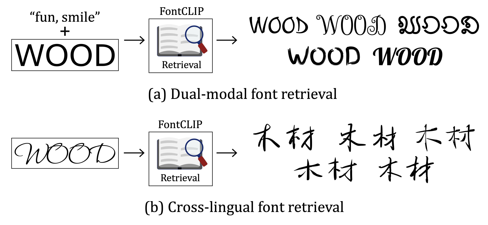 |
Yuki Tatsukawa, I-Chao Shen, Anran Qi, Yuki Koyama, Takeo Igarashi, Ariel Shamir Eurographics 2024 [PDF] [Project Page] |
| 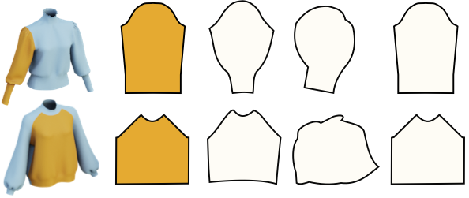 |
Anran Qi and Takeo Igarashi IEEE Computer Graphics and Applications (CG&A, Presented at GMP 2025) [PDF] [Project Page] |
| 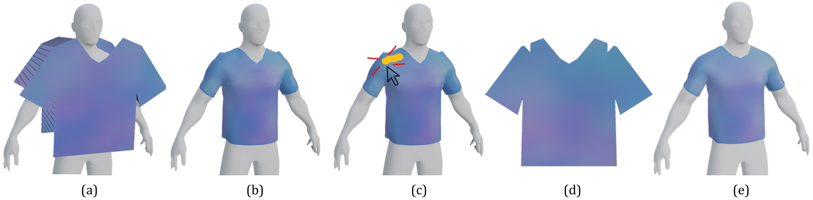 |
Charles de Malefette, Anran Qi, Amal Dev Parakkat, Marie-Paule Cani, Takeo Igarashi SIGGRAPH ASIA 2023 Technical Communication, Best Paper Award [PDF] [Project Page] |
| 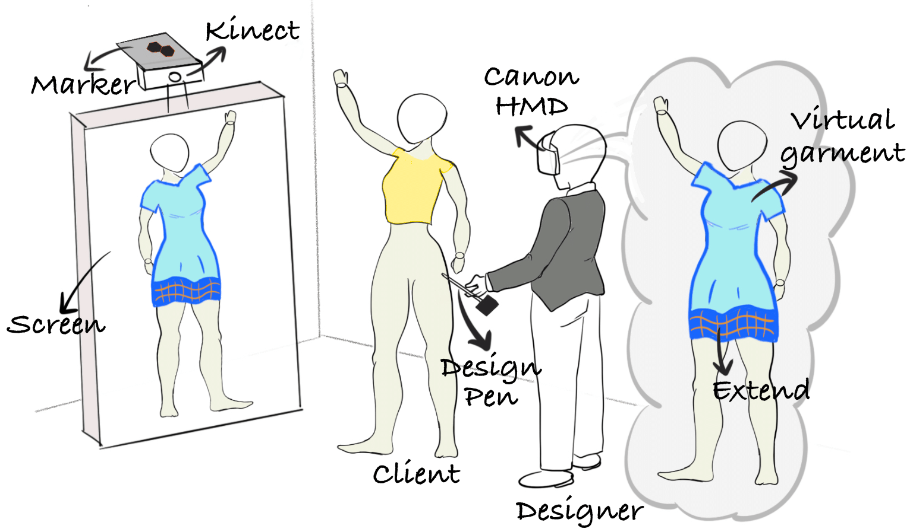 |
Akihiro Kiuchi, Anran Qi, Eve Mingxiao Li, Dávid Maruscsák, Christian Sandor, Takeo Igarashi SIGGRAPH ASIA 2023 XR, Best XR Demo Award [PDF] [Project Page] |
| 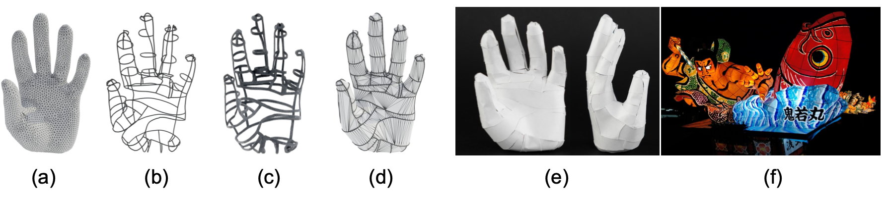 |
Naoki Agata, Anran Qi, Yuta Noma, I-Chao Shen, Takeo Igarashi SIGGRAPH 2023 Poster [PDF] |
|
Eve Mingxiao Li, Anran Qi, Mauricio Sousa, Tovi Grossman Graphics Interface 2023 [PDF] [Video] |
|
|
Anran Qi, Sauradip Nag, Xiatian Zhu, Ariel Shamir Arxiv [PDF] |
|
|
Yuta Fukushima, Anran Qi, I-Chao Shen and Takeo Igarashi SIGGRAPH ASIA 2022 Technical Communication, 2022 [PDF] |
|
|
Anran Qi, Yulia Gryaditskaya, Tao Xiang and Yi-Zhe Song IEEE Transactions on Image Processing (TIP), 2022 [PDF] [Suppl.] [Keypoints Suppl.] [Segmentation Suppl.] |
|
| 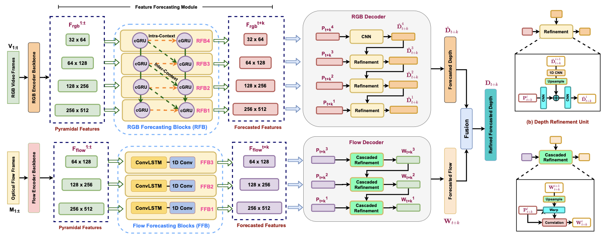 |
Sauradip Nag*, Nisarg A Shah*, Anran Qi* and Raghavendra Ramachandras IML4AD Workshop in Advances in Neural Information Processing Systems (NIPSW), 2021 [PDF] |
|
Anran Qi, Yulia Gryaditskaya, Jifei Song, Yongxin Yang, Yonggang Qi, Timothy M. Hospedales, Tao Xiang and Yi-Zhe Song IEEE Transactions on Image Processing (TIP), 2021 [PDF] |
|
| 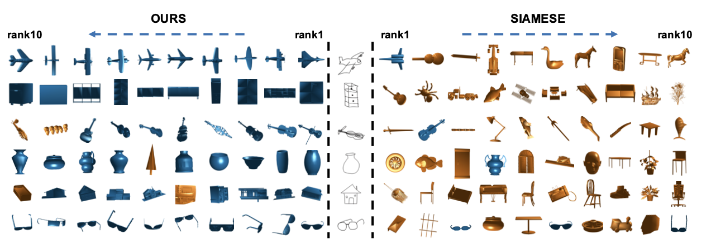 |
Anran Qi, Yi-Zhe Song and Tao Xiang British Machine Vision Conference (BMVC), 2018 [PDF] |
About Me
Working Experience
|
GraphDeco, Inria Sophia-Antipolis Post-Doctoral Fellow Advisor: Dr. Adrien Bousseau |
Dec. 2023 - Now |
|
University of Tokyo Project Assistant Professor Advisor: Prof. Takeo Igarashi |
Apr. 2023 - Nov. 2023 |
|
University of Tokyo Postdoctoral Researcher Advisor: Prof. Takeo Igarashi Research on next-generation knit innovation |
Nov. 2021 - Mar. 2023 |
|
Samsung Electronics, UK Assistant Engineer Advisor: Dr. Mete Ozay |
Jan. 2020 - July 2020 |
Education Background
|
University of Surrey (UoS) Ph.D. in Computer Science, SketchX Lab Supervisor: Prof. Yi-Zhe Song, Dr. Yulia Gryaditskaya Prof. Tao Xiang *Transfer from QMUL to UoS with supervisors |
Apr. 2019 - Oct. 2021 |
|
Queen Mary University of London (QMUL) Ph.D. in Computer Science, SketchX Lab Supervisor: Prof. Yi-Zhe Song, Prof. Tao Xiang |
Sept. 2017 - Apr. 2019 |
|
Queen Mary University of London (QMUL) & Beijing University of Posts and Telecommunications (BUPT) B.Sc (Hons) in Telecommunications Engineering with Management |
Sept. 2013 - Jun. 2017 |